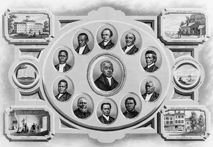

|
Founded in Philadelphia in 1816 as an alternative to segregated white churches,
The African Methodist Episcopal Church (AMEC) was the first religious
denomination in the United States to be established by African Americans.
The AMEC was, and is, doctrinally Methodist. Following the lead of John
Wesley, the Anglican clergyman who founded the sect in the 1730s, Methodists are
Arminian--they believe that man has free will and everyone can be saved. They
also hold the common Christian belief in a Trinitarian God--an eternal being one
who exists simultaneously as three persons; The Father, the Son, and the Holy
Spirit. Additionally, Methodists assert that salvation must involve service to
the world. Consistent with this belief, early Methodists showed a zeal for
fasting, and for ministering to the sick, the poor, and the imprisoned. The
worldview of the Methodist church is encapsulated in their motto: "God Our
Father, Christ Our Redeemer, Man Our Brother." Structurally, the AMEC is
patterned on the model of the Episcopal Church, with authority vested in a
hierarchy of bishops who consider themselves to be directly connected to Jesus'
twelve apostles.
|

The Bishops of the AME Church in 1825
|
Methodism came to the United States in the 1760s, when a group of ministers
brought the religion from Great Britain. These early Methodist missionaries
heartily welcomed those on the margins of American society, including African
Americans, and successfully converted thousands of blacks, slave and free, to
Christianity. Methodism spread rapidly among the white population as well,
though not all new converts shared a commitment to racial equality. Sometimes
African Americans were accepted into white Methodist congregations as equals; in
other places, worshipers were segregated by race, and African Americans were
denied the sacraments of baptism and holy communion. On several occasions, black
worshipers who inadvertently ventured into the white sections of Methodist
churches were forcibly removed.
In response to the treatment they received from white congregations, a small
cadre of African American worshipers worked to establish alternative
institutions. Led by former slave Richard Allen, this group founded the Free
African Society in 1787, then the Bethel African Methodist Episcopal Church in
1793. Although these churches were both separate from the white community, they
were still aligned with the Methodist church, and were still subject to
interference from white Methodist leaders. Allen, and many other African
American worshipers, wanted to be wholly independent from the white church, and
so he sued for the right to form his own religious denomination. After many
years, the case made its way to the Pennsylvania Supreme Court, which ruled in
Allen's favor in 1815. With the law now on his side, Allen founded the AMEC in
1816, and became church's first bishop. Because the AMEC was a response to
disagreements over race, rather than over theology, the AMEC is regarded as the
first religious denomination in the Western world to be borne out of
sociological rather than theological differences.
The AMEC, consistent with its origins and philosophy, played an important
role in supporting the abolition movement, both financially and logistically.
Before his death in 1831, Richard Allen established his church as a major stop
on the Underground Railroad; other AMEC bishops followed his lead. The AMEC was
also an early supporter of education in the black community, and in 1856 founded
Wilberforce University, the first university in the United States to be owned
and operated by African Americans. The AMEC continued as an important
institution in the black community throughout the 19th and 20th centuries, doing
much to support civil rights activism and the development of African American
culture. The church remains influential today, boasting 5 million members and
7,000 congregations spread across 30 countries.
Source: Christopher Bates, ed. The Encyclopedia of the Early
Republic and Antebellum America (Armonk, NY: M.E. Sharpe, 2010), 62-63.
|